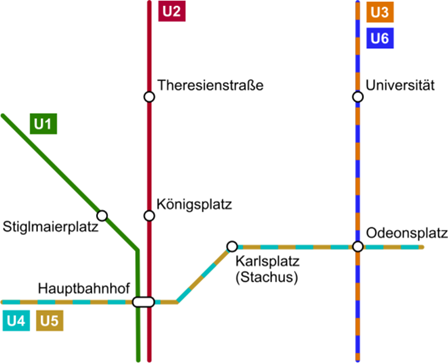

E2: Symbolization in a GIS#
Introduction#
Symbolization is the process of assigning visual variables (size, shape, color value, color hue, orientation, texture, etc.) to features (points, lines, polygons, or rasters) in order to communicate their underlying attributes effectively.
In other words, symbolization involves encoding not only the geometry (including geographic location) of features but also their attributes through appropriate visual variables.
For example,
Points: Size can represent quantitative attributes such as population or magnitude, while shape can distinguish different feature types (e.g., schools, hospitals, or landmarks).
Lines: Width may indicate traffic capacity or flow intensity, and color hue can differentiate road classes.
Polygons: Color value (lightness or darkness) can express density or intensity, color hue can represent categorical differences such as land use types, and texture can visualize surface characteristics.
Rasters: Color value and color hue are often combined in color ramps to depict continuous phenomena, such as elevation, temperature, or vegetation index.
Effective symbolization requires that the relationship between a symbol and the attribute it represents be clear and easily interpretable. The choice of visual variable primarily depends on whether the data are qualitative (categorical) or quantitative (numerical).
Read more about visual variables.
Data#
Basic Tasks#
💡 Please note that some tasks rely on the results of the last Exercise, including:
The newly created tram_stops and underground_stations layers in 1.11.1,
The updated column amenity with the value TUM in 1.12.3,
The newly created field level_num in 1.12.4,
The newly created field speed_num in 1.9.2,
The newly created underground_lines layer in 1.8.
Uniform Symbolization (2.2)
Symbolizing Bus Stops with Single Symbol (2.2.1)
(Add
bus_stopslayer from the geodatabase.)Symbolize bus stops using an appropriate point symbol from the gallery.
Adjust the color and size of the symbols if needed.
Symbolizing Tram Stops and Underground Stations with Single Symbol (2.2.2)
Symbolize tram stops and underground stations with external logo files
Tram_logo.svgandUBahn_logo.svgfrom theSymbolsfolder.Adjust the symbol size if needed.
Qualitative Symbolization (2.3)
Symbolizing Museums and TUM Buildings with Unique Values (2.3.1)
Symbolize museums from the
buildingslayer in a unique color by itstourismfield.Symbolize TUM buildings from the
buildingslayer in a different unique color by its valueTUMin theamenityfield.Symbolize all the other buildings in another different unique color.
Quantitative Symbolization (2.4)
Symbolizing Buildings with Graduated Colors
Symbolize buildings with graduated colors by building heights, calculated with
level_numand a standard story height of 3.5 m. (2.4.1)Try different classification methods, classify and symbolize the building heights into reasonable classes. (2.4.2, 2.4.3)
Assign a neutral light grey color to the
no dataclass. (2.4.3)
Symbolizing Roads with Proportional Symbols (2.4.4)
Symbolize roads with proportional line widths by the allowed maximum speed in the field
speed_num.Exclude the roads with null values and set an appropriate Maximum Size value.
Multi-Layer Symbolization (2.5)
Symbolizing Roads with Cased Line Symbols
Symbolize all the car-traffic roads with cased line symbols by the field
type of road(with the valuessecondary,secondary_link,tertiary,residential). (2.5.1)Symbolize all the other roads with a thin line symbol in a light grey color. (2.5.1)
Join and merge the cased line symbols to show connectivity across individual road segments. (2.5.2)
Scale-Based Symbolization (2.6)
Applying Scale-Based Symbol Classes to Roads (2.6.1)
Set all the car-traffic roads to be visible between 1:10,000 and larger.
Set all the other roads to be visible between 1:5,000 and larger.
Applying Scale-Based Symbol Sizing to Public Transport Points (2.6.2)
Set scale-based symbol sizing to all the bus stops, tram stops and underground stations (e.g., 50 pt at 1:1,000, … 10 pt at 1:10,000, … 1 pt at 1:100,000,000).
Symbolization with Transparency (2.7)
Try the Swipe tool to compare
orthophotoandbuildingslayer.Adjust the transparency of the
buildingslayer so that theorthophotoshows through.
Combining Symbolization Skills (2.8)
Symbolize the underground lines U1 - U6 using the styles shown below.

Advanced Tasks#
[Symbology in GIS] Compare and identify common symbology methods in ArcGIS Pro for points, lines, and polygons, and reflect on how different visual variables support qualitative and quantitative data.
[Custom Color Ramp] Explore ColorBrewer to design a custom color ramp for building heights (or any other quantitative attribute), and apply it using Graduated Colors symbology.
[Bivariate Symbology] Experiment with Bivariate Symbology in the buildings layer — for example, combining height and area to reveal multidimensional spatial patterns.
[Arcade Expressions] Use Arcade expressions to create flexible, data-driven symbolization — for instance, by combining road type and speed limit into a single rule.
[Mixed Symbology] Use Vary Symbology by Attribute to combine multiple visual variables within the same layer, such as size, color, rotation and transparency, and observe how this affects the map’s readability.
[From Symbology to Map Styles] Explore web map symbology using Maputnik, experiment with colors, line widths, and feature visibility across zoom levels, and reflect on how web map styles differ from symbology in ArcGIS Pro.
[Visual Variables] Explore the dictionary of visual variables (e.g., here) and examine how each variable influences map perception.
Assignment Submission#
Submit two screenshots (.png or .jpg) in Moodle by next Monday (03.11.2025) showing the following results.
Screenshot A:
Results of 2.2: symbolized Public Transport Points (including Underground Stations, Tram Stops, and Bus Stops),
Results of 2.8: symbolized Underground Lines,
Symbolized Tram Lines with an appropriate style.
Screenshot B:
Results of 2.4.1 - 2.4.3: symbolized Buildings with graduated colors by building heights,
Results of 2.5: symbolized Roads with Cased Line Symbols.
Please pay attention to the drawing order between layers, and only show the required results in each screenshot.